Working with Documents: {{docpanel.msg}}
The ability to display your documents (bylaws, ccr's, minutes, financials, etc) to your web site visitors begins by converting the document to an acceptable format - pdf, html, Word, or Excel – and uploading them to the documents feature on the site. Usually, the Adobe .pdf format is the format of choice because almost everyone has a copy of the free reader installed on their computer, but the other formats may be uploaded as well. If you would like more information about document formats, click the Preparing tag at left.
Select “Features” on your admin panel's left hand menu and then locate the Documents feature.
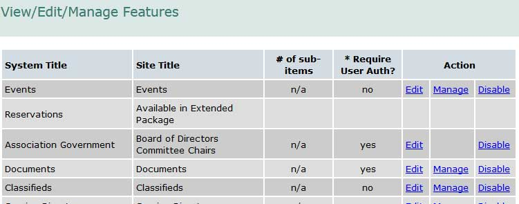
Select “Edit” to configure the basic options- you will see a screen similar to the one below. There will be a "Save" button below the info shown
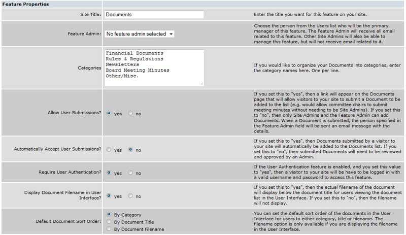
Site Title: If you prefer to name the documents feature something other than the default “Documents” you can change the name here. This is the title that will be displayed when the the documents listing page is displayed on the site.
Feature Admin: Selecting a feature administrator from the drop list of your available feature administrators allows you to share the document maintenance duties with someone else. Use the drop-down menu to display a list of feature administrators (Their user records are marked as “Feature Administrators”).
Allow User Submissions: If you would like your users to be able to submit their own documents, select “yes.” Otherwise, select “no.”
Automatically Accept User Submissions: Assuming you allow submissions (above), you can control whether those submissions are automatically added to the approved (“yes”) or require review and approval before appearing in the documents list (“no”).
Require User Authentication: If you want only logged in users to be able to view the calendar, select “yes.” Otherwise, select “no.” Document security can be set at this level (referred to as the “feature level”), and at the document level. If you intend to assign any documents to “User Groups” (available in the extended package only) - or make any of them secured - set “Require User Authentication?” to “yes.” You can override the setting at the document level, making only selective documents available without the need to log in (referred to as “public” documents). See page 4 for more information.
Display Document Filename in User Interface: If you want the file name displayed in addition to the comment, select “yes.” If you want only the comment displayed, select “no.” This option applies to the automatically generated documents listing display created when link to the feature or category level as opposed to a specific document. For a "cleaner" look to your document list, we suggest selecting "no".
Default Document Sort Order: This option controls the sequence of the automatically generated display. If your document names (comments) are consistent or you are willing to edit them to make them consistent, you can select the “By Document Title” option. Otherwise select one of the other options – by file name, or by category.
Feature Admin: Selecting a feature administrator from the drop list of your available feature administrators allows you to share the document maintenance duties with someone else. Use the drop-down menu to display a list of feature administrators (Their user records are marked as “Feature Administrators”).
Allow User Submissions: If you would like your users to be able to submit their own documents, select “yes.” Otherwise, select “no.”
Automatically Accept User Submissions: Assuming you allow submissions (above), you can control whether those submissions are automatically added to the approved (“yes”) or require review and approval before appearing in the documents list (“no”).
Require User Authentication: If you want only logged in users to be able to view the calendar, select “yes.” Otherwise, select “no.” Document security can be set at this level (referred to as the “feature level”), and at the document level. If you intend to assign any documents to “User Groups” (available in the extended package only) - or make any of them secured - set “Require User Authentication?” to “yes.” You can override the setting at the document level, making only selective documents available without the need to log in (referred to as “public” documents). See page 4 for more information.
Display Document Filename in User Interface: If you want the file name displayed in addition to the comment, select “yes.” If you want only the comment displayed, select “no.” This option applies to the automatically generated documents listing display created when link to the feature or category level as opposed to a specific document. For a "cleaner" look to your document list, we suggest selecting "no".
Default Document Sort Order: This option controls the sequence of the automatically generated display. If your document names (comments) are consistent or you are willing to edit them to make them consistent, you can select the “By Document Title” option. Otherwise select one of the other options – by file name, or by category.
Document Formats
You can upload almost any document format, but anything other than PDF requires the user to have the supporting application open when they select the document from your site. Optionally, they can download a copy of non-PDF documents and open it in a compatible program. We always recommend using PDF documents and can assist if you have a different format file and need a hand converting it.Managing Your Filenames
The documents will sort automatically into alphabetical order within each category. That means, if you want to utilize the category option (see the 'Categories' tag at left) to easily display monthly minutes, newsletters, etc, it's best to stick to a convention for naming the files before upload. Put the date first in numeric format to ensure that files will sort chronologically. For example: Use "2015-01-17boardminutes.pdf" as the file name for minutes from Jaunary 17, 2015. If you follow this same convention with future documents you upload, you can be sure they will follow the proper order.Creating a PDF Document
Scanning Option #1 - Scanning to Word Processing File.Most scanners include OCR (Optical Character Recognition) software with their other scanner utility software. OCR is far from perfect, but may be a good option for two reasons:
1) The output is a word processing document - much smaller than an image-based PDF file.
2) The document can be converted to PDF later and you will have the original that can be modified in the future as changes are needed.
Typically, your scanner software will offer a “scan to” option. By telling it to “scan to” Word (or any other installed word processor) and defining the output as text, your OCR software will be used to “read” the document. A word of warning: scanning text this way requires a very clean, very clear document. Copies, or even worse, copies of copies, will not give you a workable file. Handwritten notes, watermarks, or other non-text on the document will cause the OCR software to produce “garbage.” In addition, even a clean document will likely need some clean up (editing) before you can use it or convert it to PDF. Once you have the documents is a word processing file, there are several options for converting them to PDF (see below).
Scanning Option #2 - Scanning directly to PDF
The most common way to make a paper document available in electronic format to is scan the pages of the document into a PDF file. Adobe Acrobat (not the free Acrobat Reader) costs several hundred dollars depending on the version you buy, but can work with most scanners to do this. Some scanners provide their own software to do the conversion. A search on one of the popular search sites (Google, Yahoo, MSN, etc.) will show you other, less expensive ways to do it – just be sure they are compatible with your scanner.
Scanning a paper document directly to a PDF file is essentially “taking a picture” of each page of the document, and each page of the PDF file is one of those “pictures”. Since the final document will be a number of images, it is important for each scanned page to be as small as possible - to avoid creating very large PDF files. Large PDF files take a long time for users with a slower internet connection to download and they will quickly use up file space included with your site, perhaps requiring the purchase of additional file storage space.
When scanning documents directly to PDF, two scanner settings are important: the resolution of the image and the number of colors in the image (also known as “color depth”). A resolution of 200 dpi (dots per inch) is typically adequate – that’s the same resolution a fax machine uses. Use 200 dpi is your starting point. When you have gotten scans to PDF that seem reasonably small, you can go back and experiment with higher resolutions, which will produce “sharper” (but larger) page images.
By default, most scanners will use 24-bit color. For documents, you want to set the scanner software for "black and white" mode, or 2-bit color. Don't use "grayscale", since that still typically uses 8-bits per pixel. Your goal is to get PDF files that are no more than 10 – 15 kb per page.
Text Option #1 - Acrobat from Adobe:
If you only have a few documents to convert, Adobe has a service on their web site that will allow you to convert up to 10 documents at no charge. If you have more than 10 documents, or your documents exceed their size limitations, you can sign up for this online service. The cost of this conversion service is not substantial. Of course, you can also purchase the PC based version of Adobe Acrobat. The cost is several hundred dollars, but may be cost justified if you need sophisticated PDF creation capabilities.
Abobe’s patent on the PDF format has expired so there are now more and more programs capable of viewing, printing, and creating PDF documents. We suggest you search the web for “PDF creation” and look for yourself. Many of these are available for a fraction of the cost of Adobe’s Acrobat.
Text Option #2 - Printing to PDF:
The easiest way to convert output from any Windows application program (e.g. a Word document, an Excel spreadsheet, a Publisher newsletter, or even another PDF file) to a PDF document suitable for uploading, is by using one of the "PDF Printer Driver" solutions. These install on your computer as a “virtual printer.” When you want to create a PDF file, you simplly choose File/Print from the program’s menu and choose the PDF Printer as output device. You'll be prompted for location and name of the PDF file. See below for some example of these “virtual printer” programs.
There are lots of good "PDF Printer Drivers" available, here are a few to consider:
- PDFcreator (a SourceForge.net open source project) - This is a free, open source program. If you like the program enough, there is a way to donate to the authors via the SourceForge project page. PDFcreator 0.8 has been used extensively, and is considered "stable and safe". You can get a copy at http://sourceforge.net/projects/pdfcreator/
- Win2PDF from Dane Prairie Systems - You can download a free version from them to try out. The free version adds an extra page (ad) to the end of every PDF created. Or, you can purchase a single-user license for $35. The licensed version has no ad page. You can get a copy at http://www.daneprairie.com/
- CutePDF - There are several versions available with varying degrees of capabilities. The free version is adequate for document conversion and easy to use with no ads or watermarks. Get your free copy at http://www.cutepdf.com/
- PrimoPDF - This PDF conversion utility is free for non-commercial use. It is very easy to use and provides several options for PDF conversion (screen optimized files are smaller that print optimized file). Get your free copy at http://www.primopdf.com/
Documents, similar to images, must be uploaded before they are available to you on your site. The process is similar to the one used for images. When you select “Manage” from the feature screen next to the “Documents” feature, you will see a screen similar to the one below.
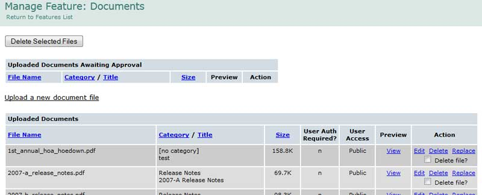
This is the master list of documents uploaded to your site. You can click any blue table column link to sort the listing by that criteria - File Name (default), Category, Title, Size.
To upload a document, select “Upload a new document file” and a screen similar to the one shown below screen will be displayed. 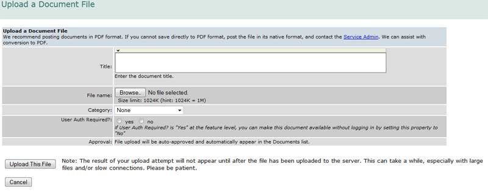 Title - Enter a name for the document, e.g. “Policies.” The comment you enter here will help you identify the document when you use the “Insert/Edit Link” button in the page editor. It will also assist the user in locating the correct document when you link to documents at the feature or category levels. If you leave it blank, it will be difficult to identify the correct document in the editor and the title will be blank in the automatically generated display (the documents pick list).
File Name - Use “Browse” to locate the document you want to upload on your local computer. Then select the document from your local PC.
Category - You should assign the document to one of the categories available from the drop down menu. If you would like to create a new category, or modify one of the existing ones, return to the Features list and select “Edit” next to documents. You have the option, when assigning documents to a menu item (button) or a page area text link using the “Insert/Edit” button on the editor, of assigning individual documents, document categories, or all documents. Assigning document categories is a convenient way of handling similar documents, e.g. newsletters, minutes, etc. Just remember that the documents will automatically sort alphabetically within each category, so if you want a category to display in chronological order, be sure to put the date first in the file name before uploading (e.g. "2015-01-17boardminutes.pdf" for minutes from Jan 17, 2015).
User Auth Required? - If you would like to make this document secure (i.e. require a logon to read it) set this option to “yes.” If you intend to restrict the document to a specific group of users, you must set this option to “yes.” (See the “User Groups” guide available in the "Users" tab on the help homepage for more information.)
Set Group Authentication Limit? - (available in the Extended Package only) To restrict access to this document to a specific User Group (e.g. Board members), set this option to “yes” and select the group below it. When you have completed the screen, select “Upload this File”.
Uploading a document can take some time - so be patient. The upload time depends on the size of your file and the speed of your connection. You are notified that the upload was successful. Once the document is uploaded to the site, you can create a link to it via a menu item or from a text link in a page area (click the Linking tag at left for details).
To upload a document, select “Upload a new document file” and a screen similar to the one shown below screen will be displayed. 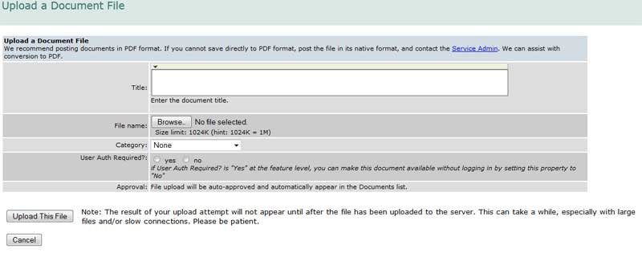 Title - Enter a name for the document, e.g. “Policies.” The comment you enter here will help you identify the document when you use the “Insert/Edit Link” button in the page editor. It will also assist the user in locating the correct document when you link to documents at the feature or category levels. If you leave it blank, it will be difficult to identify the correct document in the editor and the title will be blank in the automatically generated display (the documents pick list).
File Name - Use “Browse” to locate the document you want to upload on your local computer. Then select the document from your local PC.
Category - You should assign the document to one of the categories available from the drop down menu. If you would like to create a new category, or modify one of the existing ones, return to the Features list and select “Edit” next to documents. You have the option, when assigning documents to a menu item (button) or a page area text link using the “Insert/Edit” button on the editor, of assigning individual documents, document categories, or all documents. Assigning document categories is a convenient way of handling similar documents, e.g. newsletters, minutes, etc. Just remember that the documents will automatically sort alphabetically within each category, so if you want a category to display in chronological order, be sure to put the date first in the file name before uploading (e.g. "2015-01-17boardminutes.pdf" for minutes from Jan 17, 2015).
User Auth Required? - If you would like to make this document secure (i.e. require a logon to read it) set this option to “yes.” If you intend to restrict the document to a specific group of users, you must set this option to “yes.” (See the “User Groups” guide available in the "Users" tab on the help homepage for more information.)
Set Group Authentication Limit? - (available in the Extended Package only) To restrict access to this document to a specific User Group (e.g. Board members), set this option to “yes” and select the group below it. When you have completed the screen, select “Upload this File”.
Uploading a document can take some time - so be patient. The upload time depends on the size of your file and the speed of your connection. You are notified that the upload was successful. Once the document is uploaded to the site, you can create a link to it via a menu item or from a text link in a page area (click the Linking tag at left for details).
When you need to change a document, it is not necessary to delete the old one from your site and then upload a new one, and re-link it to any buttons or text links. The Replace function does all of that for you in one operation. To replace an document, select the Replace link next to the old document on the document file list, browse to the new document on your local PC, and Upload it.
Over time, you may have uploaded many documents that fall into disuse. It is a good practice to periodically clean up the documents listing. If you intend to use a document again, by all means leave it in the listing, but if you no longer need it, we suggest deleting it. This will save space on your site, as well as keep your master documents listing clean and easy to manage. To delete a single document, select the “Delete” link next to the no-longer-needed document and confirm the delete. To delete several documents at once, click the “Delete file?” check box next to each one. When they have all been selected, click the “Delete selected files” button at the top of the screen.
Document Options - Edit, Delete, Replace 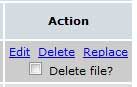 Multiple Delete - Check the 'Delete file?' box for each file you want to remove, then click the delete button seen below 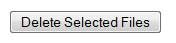 Please make sure the document is not in use before you delete it, as deleting the document will not delete menu items and/or text links that lead to that document file. It's necessary to delete those individually.
Over time, you may have uploaded many documents that fall into disuse. It is a good practice to periodically clean up the documents listing. If you intend to use a document again, by all means leave it in the listing, but if you no longer need it, we suggest deleting it. This will save space on your site, as well as keep your master documents listing clean and easy to manage. To delete a single document, select the “Delete” link next to the no-longer-needed document and confirm the delete. To delete several documents at once, click the “Delete file?” check box next to each one. When they have all been selected, click the “Delete selected files” button at the top of the screen.
Document Options - Edit, Delete, Replace 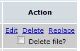 Multiple Delete - Check the 'Delete file?' box for each file you want to remove, then click the delete button seen below 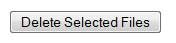 Please make sure the document is not in use before you delete it, as deleting the document will not delete menu items and/or text links that lead to that document file. It's necessary to delete those individually.
You can create categories to keep your documents organized. This has 2 benefits: It will keep your master list easy to manage, and will allow you to set up links directly to any individual category (very useful for things like monthly board meeting minutes or newsletters).
Category Creation - Click the edit link for the documents feature (on the main features tab of your admin panel). You'll see a white text box with the categories label- just type any category you want to use inside that box (one per line) and save. This makes that category available when uploading/editing a document. 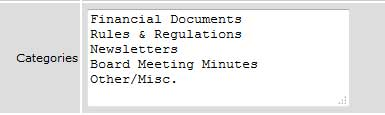 Assigning a Document to a Category - When uploading a new document or editing an existing document's record, you can assign the document to one of the categories available from the drop down menu in the image below (shown with the drop down open). 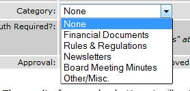
Category Creation - Click the edit link for the documents feature (on the main features tab of your admin panel). You'll see a white text box with the categories label- just type any category you want to use inside that box (one per line) and save. This makes that category available when uploading/editing a document. 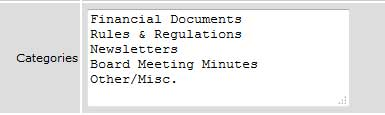 Assigning a Document to a Category - When uploading a new document or editing an existing document's record, you can assign the document to one of the categories available from the drop down menu in the image below (shown with the drop down open). 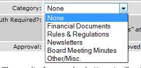
Once you've uploaded a document to your site, you will need to create a link to it in order to allow it to display for your users. There are a few options for this:
Menu Item - If you want to include a link to an individual document or a document category in a page's menu,
1) From the admin panel, click the 'pages' tab in the left hand menu.
2) Find the page you'd like to add the link to and click to edit it.
3) Scroll down to the menu items section and click the 'create new menu item' link.
4) Name the item, set it to 'go to a feature' and choose 'documents' from the drop down list to link to a document (shown below), or 'document categories' to go to a category.
5) Click the 'go directly to a specific feature item' box.
6) From the final drop down list that appears, choose the individual document or category for the link.
7) Save the menu item. 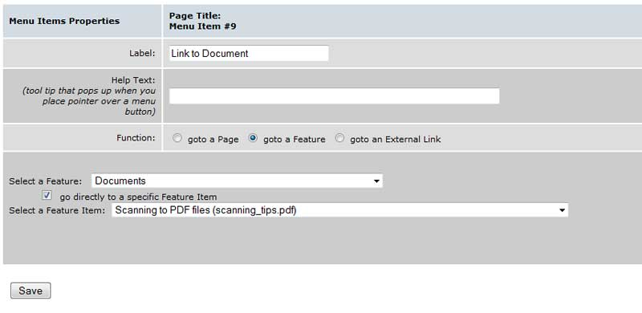 Text Link - Or, you can set up a text link within a page area to a document or document category:
Steps 1 and 2 are identical to the process above, then:
3) Scroll to the 'page areas' section and click to edit the page area where you'd like the link to appear (or create a new one).
4) Type the text you'd like to appear as the link (i.e.- "Click here") and use your cursor to highlight/select that text only.
5) Click the url creation button on the formatting toolbar (above the text entry area)- it's all the way to the right of the second row and looks like a small globe with a chain link on it.
6) A box will pop up (if it doesn't, choose to allow pop ups for the site and try again)- choose 'link to a feature' from the first drop down list in that box.
7) Then, choose the document you uploaded from the final drop down list (it will appear as the title you gave it in step 4 of the uploading documents instructions above).
8) Click the 'ok' button and your link will be inserted (pop up with page area shown below) 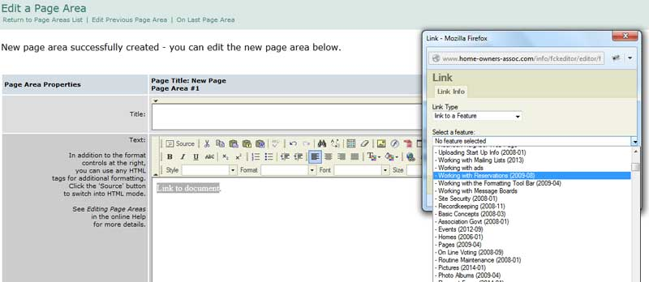
Menu Item - If you want to include a link to an individual document or a document category in a page's menu,
1) From the admin panel, click the 'pages' tab in the left hand menu.
2) Find the page you'd like to add the link to and click to edit it.
3) Scroll down to the menu items section and click the 'create new menu item' link.
4) Name the item, set it to 'go to a feature' and choose 'documents' from the drop down list to link to a document (shown below), or 'document categories' to go to a category.
5) Click the 'go directly to a specific feature item' box.
6) From the final drop down list that appears, choose the individual document or category for the link.
7) Save the menu item. 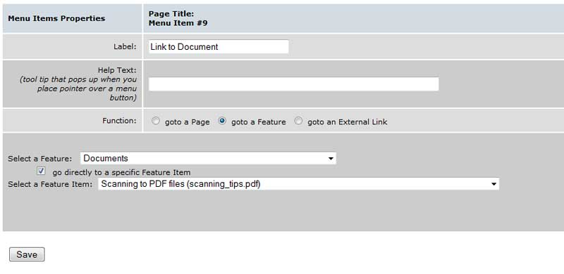 Text Link - Or, you can set up a text link within a page area to a document or document category:
Steps 1 and 2 are identical to the process above, then:
3) Scroll to the 'page areas' section and click to edit the page area where you'd like the link to appear (or create a new one).
4) Type the text you'd like to appear as the link (i.e.- "Click here") and use your cursor to highlight/select that text only.
5) Click the url creation button on the formatting toolbar (above the text entry area)- it's all the way to the right of the second row and looks like a small globe with a chain link on it.
6) A box will pop up (if it doesn't, choose to allow pop ups for the site and try again)- choose 'link to a feature' from the first drop down list in that box.
7) Then, choose the document you uploaded from the final drop down list (it will appear as the title you gave it in step 4 of the uploading documents instructions above).
8) Click the 'ok' button and your link will be inserted (pop up with page area shown below) 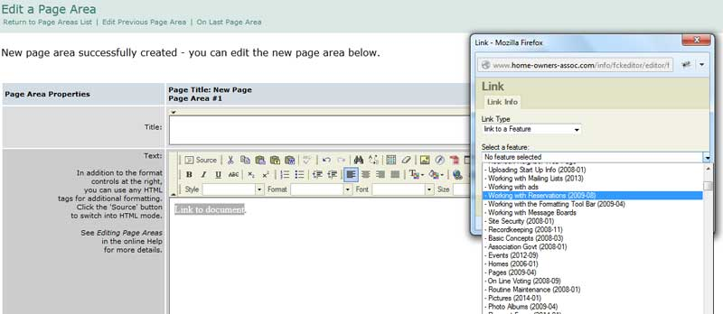